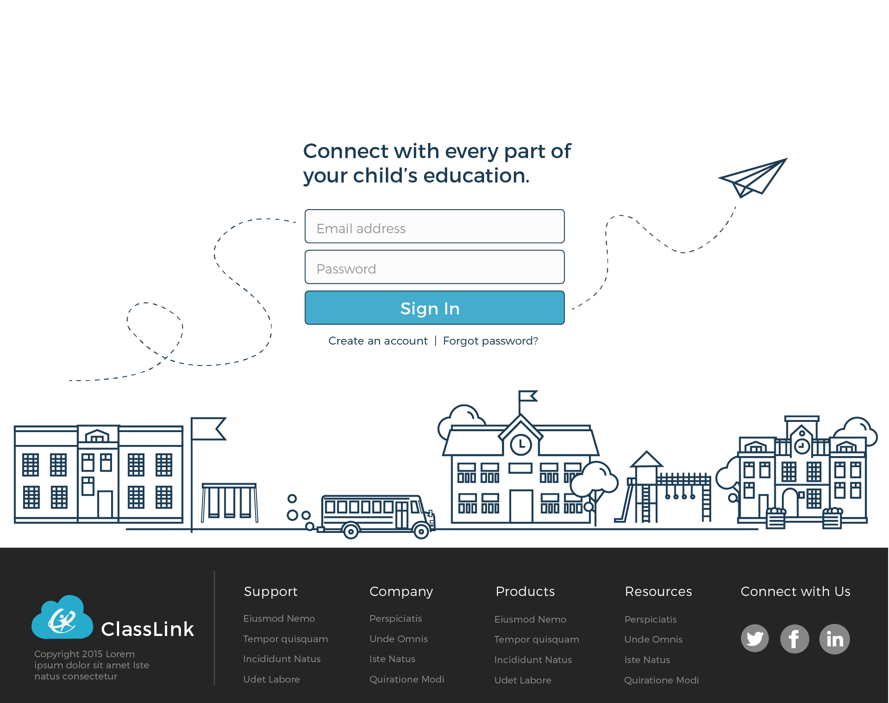
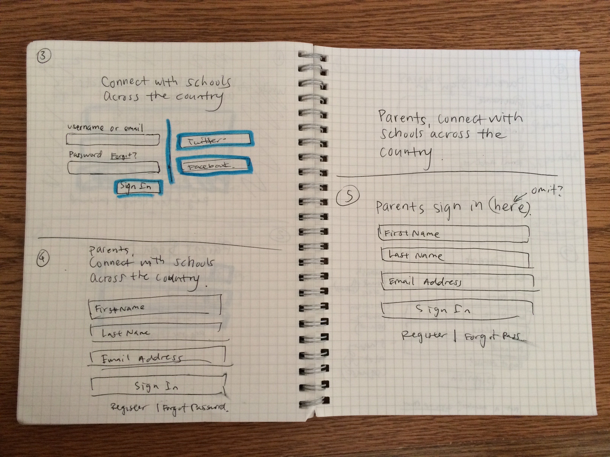
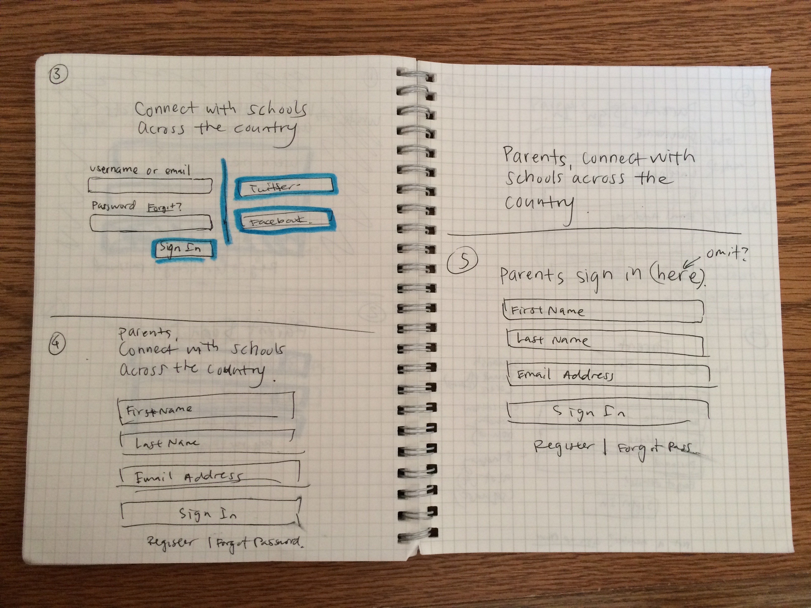
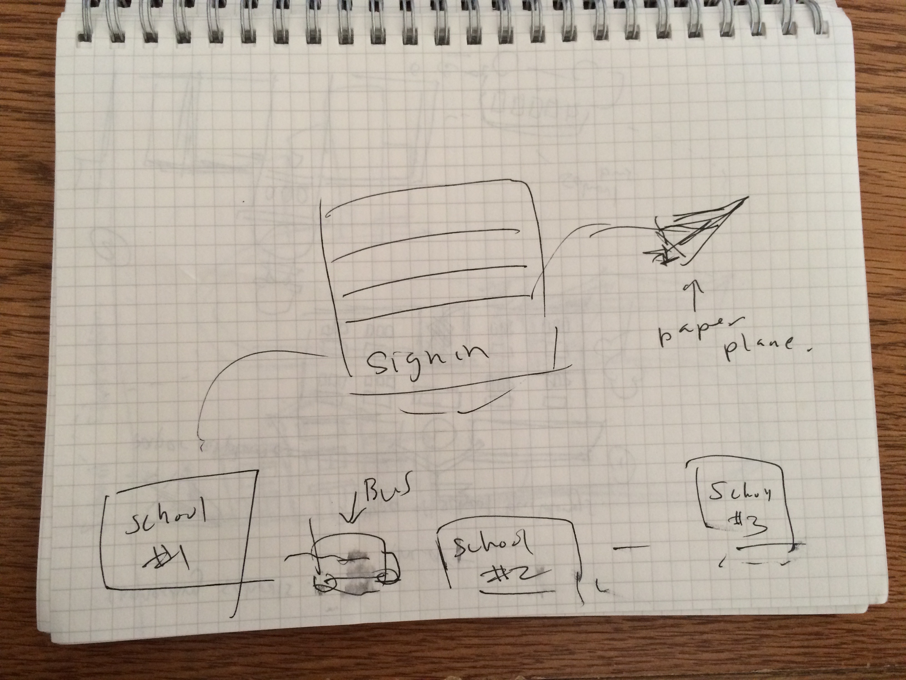
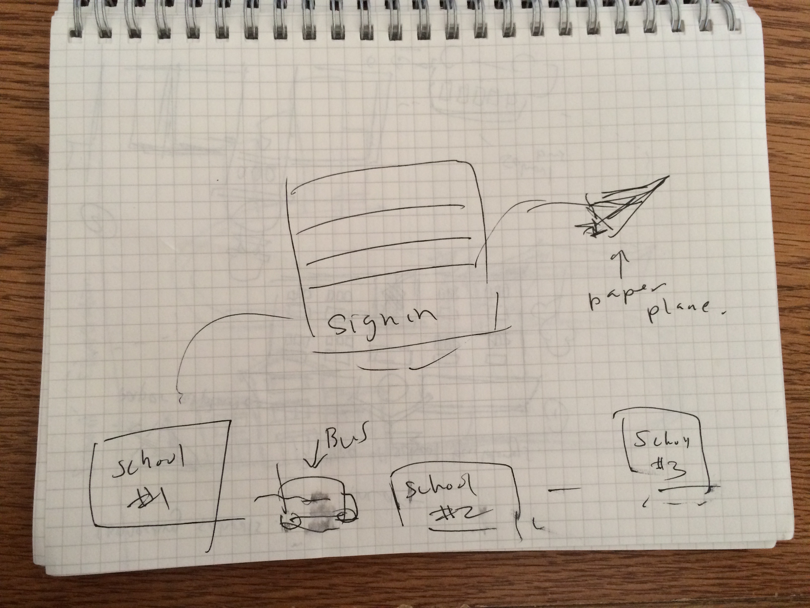
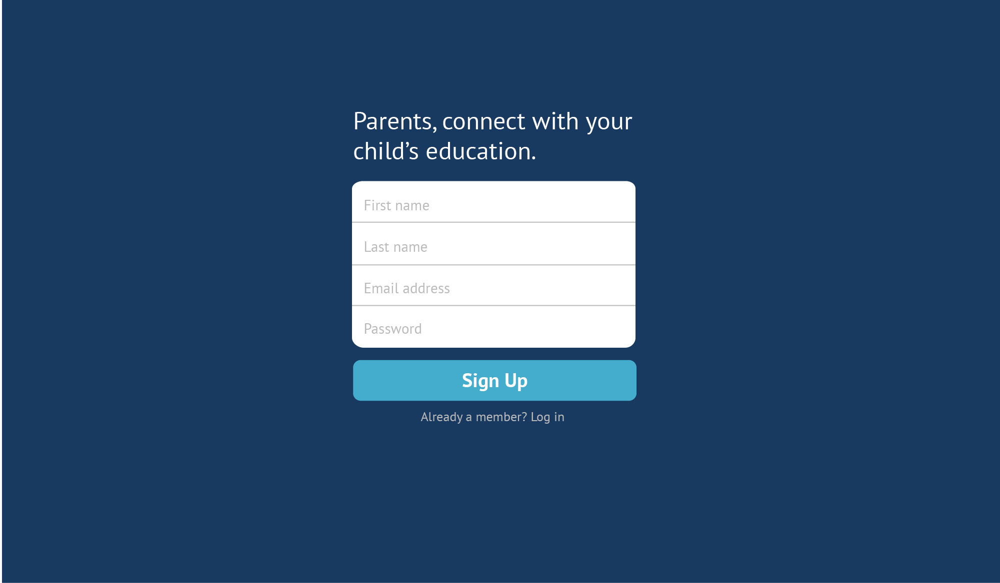
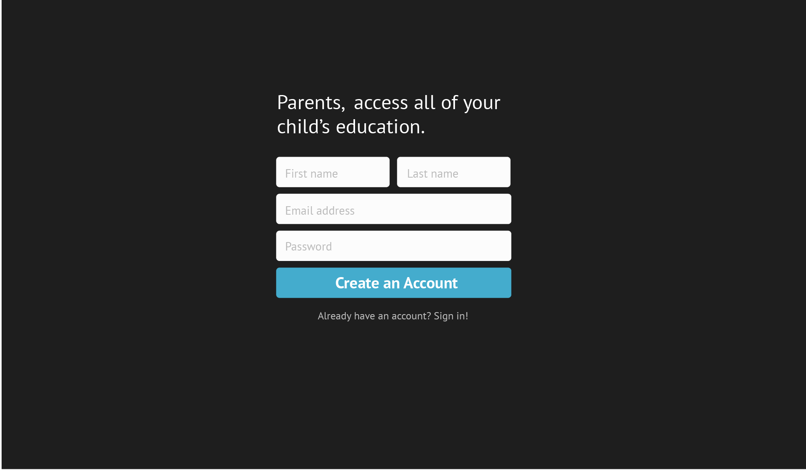

Classlink Parent's Sign in Screen
Log in to access all of your student's information. I entered this design to a 99designs.com contest and
was a
finalist for the contest.

Features
Main Element: Sign in Form
The sign in form is the main focus of this page and thus placed at the center
of the page with big text and framed by the illustration. The sign in form is clear and compact,
with a heading that demonstrates what signing in will allow a parent to do as well as an
accompanying illustration.
The logical organization of input boxes leads to a very clear "Sign in" button.
Subordinate functions such as "Create an Account" and "Forgot password" are
placed in a visible location that is non-obtrusive from the main flow of the form.
Line-art Illustration
I choose to create a simple, landscape illustration with line art to give it a friendly and not flashy look. I wanted to avoid a clipart-esque look for this education
website as a lot of education websites often resort to clipart that doesn't add visual
value. I did not color in my illustration so that it would not be distracting for this page. Focusing on just the lines also creates
a clean "drawing" look. I added additional delight and function to the illustration with a paper airplane.
The paper airplane flows from the “email” input to the “Sign In” button and shows that once a parent signs in, he or she will be connected to
all of your child's educational resources.
Organized Footer
I designed a dark gray footer that
provides a nice contrast to the illustration without distracting from it. The Classlink logo is
visibly and balancely placed on the left while basic links to other pages on the website are organized in columns in
the middle section of the footer.
The “connect with us” social media icons on the rights side balance out the text heavy footer.
Social media is really important in spreading the word for the brand and gaining feedback.
Placing it on the far right of the footer makes it easier for users to connect with Classlink.
With these three sections, links don't feel cluttered and are easy to find.
Problem
Create a sign in page for parents to access their student's information and education resources through Classlink
Some of the Sketches
 

 

Low-Fidelity Mockups


Lessons Learned
I learned about line art! Before this, I had only created flat illustrations focusing
on a limited color palette and long shadows. It was fun and challenging to depict
recognization elements with just lines and forced me to visual how a school or neighborhood
looked like from another perspective.
It was also different designing one web page rather than designing an entire website. Design one web
page allowed me to really focus on just that page. It put myself into the user's shoes
to figure out how a user would get to that page and leave
that page. I was forced to create a comprehensive experience for a single page, a skill I will use
to break down designing entire websites.